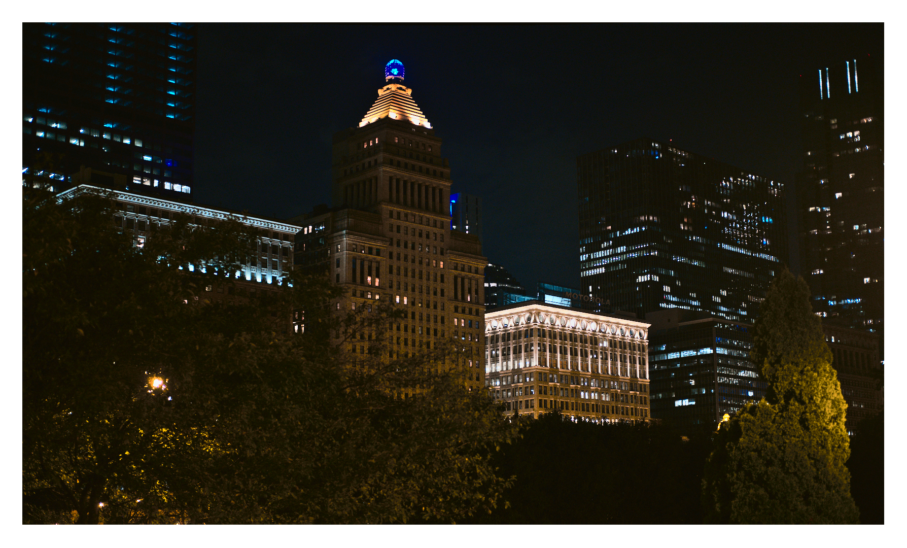

Chicago
Chicago, Illinois, USA - Summer 2019
Some photos I took during a work trip to Chicago in the summer of 2019. It was actually my first trip to Chicago and I quite enjoyed it even though I wasn't there for very long. Photos shot on either a Ricoh 500 G 35mm film camera (I forget which film, either Kodak Portra 400 or Fujifilm Superia X-tra 400), or on a Fujifilm X-H1 with a 35mm f/2 lens. All editing was done using Darktable.
Most of these photos were taken in the evening when the weather was overcast.


The next few photos are taken inside Chicago Union Station. I like the architecture of this building, although it is a bit of a maze to navigate.


A friend took this one of me sitting in the main hall/waiting room of the station.
I love roomy stations like this, it works well for traffic and reduces congestion during rush hours.
This station reminds me a lot of 30th St. Station in Philadelphia.

It was starting to get darker by the time I was done exploring the station. Snapped some photos of the boats going up and down the river.


I like the way this neon sign looks and the ambient light it casts on the sidewalk around it.
I ate deep dish pizza here the next day and it was delicious.
Cool (and massive) sculpture I saw while wandering around the city.
I like the juxtaposition of the bright curvy sculpture against the dark, grey, rigid buildings in the background.
Wound up at a park which was pretty close to a large body of water that I'm assuming is Lake Michigan.
The line of lights in the top right of this image is just light reflecting off the lens.
Not sure where it came from, and I forgot to edit it out in post. Oops.

There were a lot of these lit-up carts that tourists were getting rides in around the park.
Made for an interesting photo.
A boat on Lake Michigan. I went there when it was daylight too, and I was surprised at how large the lake is.
I was expecting to be able to see land in distance but definitely couldn't.
Guess it's called a Great Lake for a reason.
